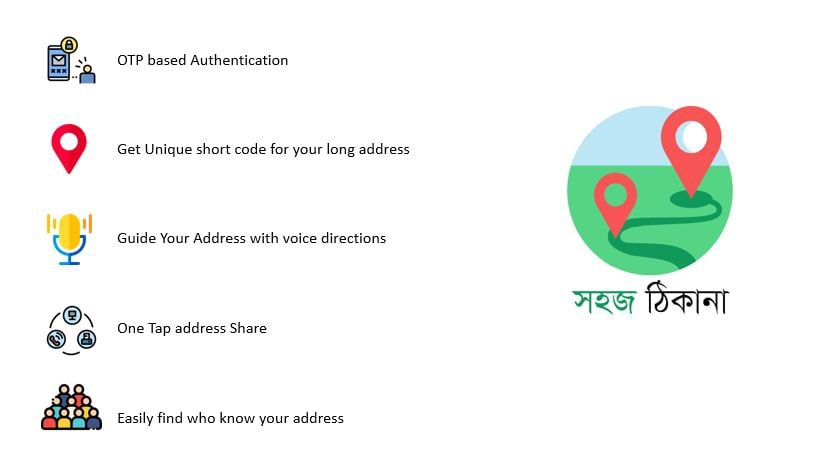
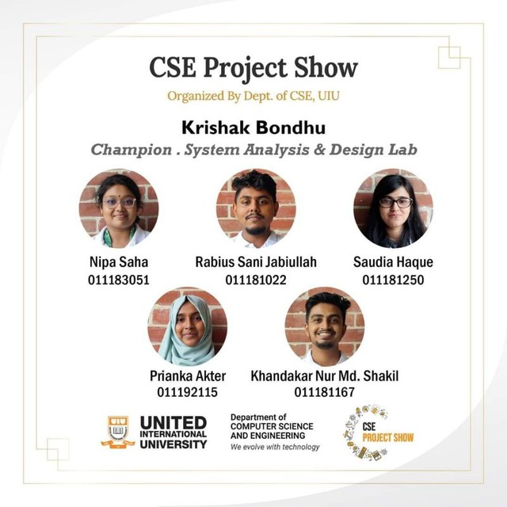

My projects revolve around addressing end users' core issues and placing their needs at the forefront of development. Sustainability and users' fundamental concerns are at the heart of my work. I dedicate my efforts to studying, analyzing, and designing mobile technologies, mainly focusing on marginalized populations across Bangladesh.

In online shopping, customers must share personal details like home addresses, phone numbers, and house information with shop owners and delivery organizations. This poses security risks as it becomes challenging to monitor or trace the usage of this sensitive information. Once shared, customers lose control over their data, leading to potential security breaches.
Shohoj Thikana allows users to monitor and modify their sensitive information quickly. Users can see who has accessed their data, update their addresses, and add relevant details like images or voice directions. They can also customize and shorten their location addresses for convenience.
This project significantly enhances user security and control over personal information. It allows users to manage their data proactively, ensuring privacy and customization. It was recognized as the runner-up in the Software Engineering Lab at the CSE Project Show in ('22).

Bangladesh's agricultural sector faces severe challenges due to high loan interest rates, lengthy paperwork, and inadequate risk management. These issues make it difficult for farmers to secure the necessary funds for cultivation, leading many to abandon farming, which threatens the country's economy.
The proposed solution, Krishok Bondhu, introduces a Grow-Now-Pay-Later (GNPL) policy. This system allows farmers to acquire essential agricultural products like seeds and fertilizer without immediate full payment. Instead, they can repay the costs after harvest, reducing financial stress and encouraging continuous cultivation.
This project won first place in the System Design Project Showcase at United International University ('22).
Implementing the Krishok Bondhu system has the potential to revolutionize agriculture in Bangladesh by providing farmers with the financial flexibility to continue their work without the burden of high-interest loans. This approach stabilizes farmers' incomes and promotes sustainable agricultural practices, significantly enhancing the livelihoods of millions of farmers in a rural area.
The core of my research work lies in promoting sustainability and prioritizing the essential concerns of users. My dedication is directed towards investigating, analyzing, and developing mobile technologies, focusing on marginalized communities in Bangladesh. By leveraging user-centric design principles, my research aims to create impactful and inclusive technological advancements that empower these populations, ensuring their unique needs and circumstances are effectively met.
Policy Clarity
This research investigates the widespread tendency of users to ignore Terms and Conditions (T&C) during app installations, aiming to understand the underlying causes and real-world consequences of this behavior.
Ignoring T&C can lead to significant issues such as data privacy breaches, financial implications, and legal liabilities. An example highlighted is an incident in Karnataka, where an engineering student faced severe consequences due to unawareness of the app's data access, ultimately leading to blackmail and tragedy. Addressing this problem is crucial for enhancing user awareness, protecting privacy, and ensuring informed consent in the digital environment.
The research employs a mixed-method strategy, combining surveys and interviews to explore user attitudes and behaviors toward T&C. By analyzing the reasons behind T&C neglect, the study aims to propose solutions that improve readability and engagement. One suggested approach includes using graphical representations of T&C to make them more accessible and understandable, thus encouraging users to read and comprehend these crucial documents before agreeing.
This research is currently ongoing and is in the prototype phase. The project is developing and testing new approaches to present T&C in a more user-friendly manner, aiming to enhance user engagement and comprehension.